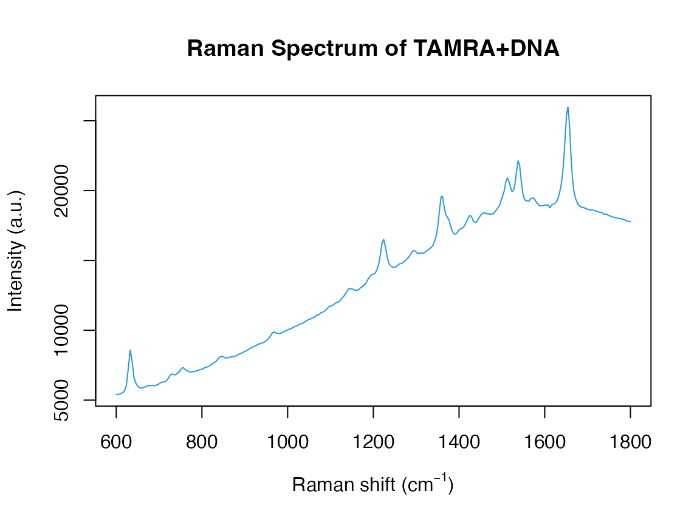
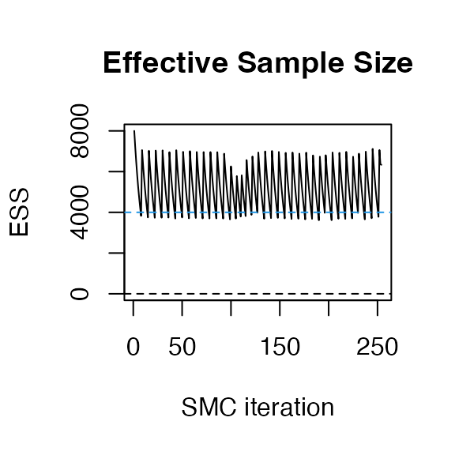
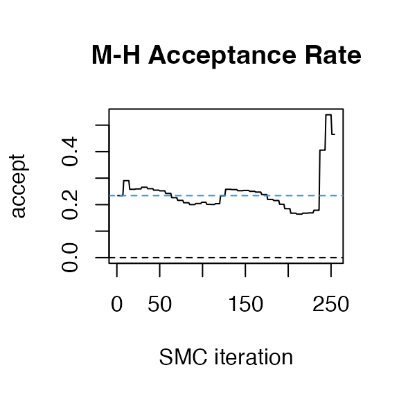
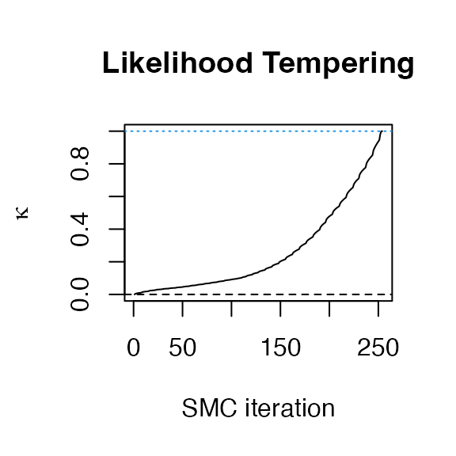
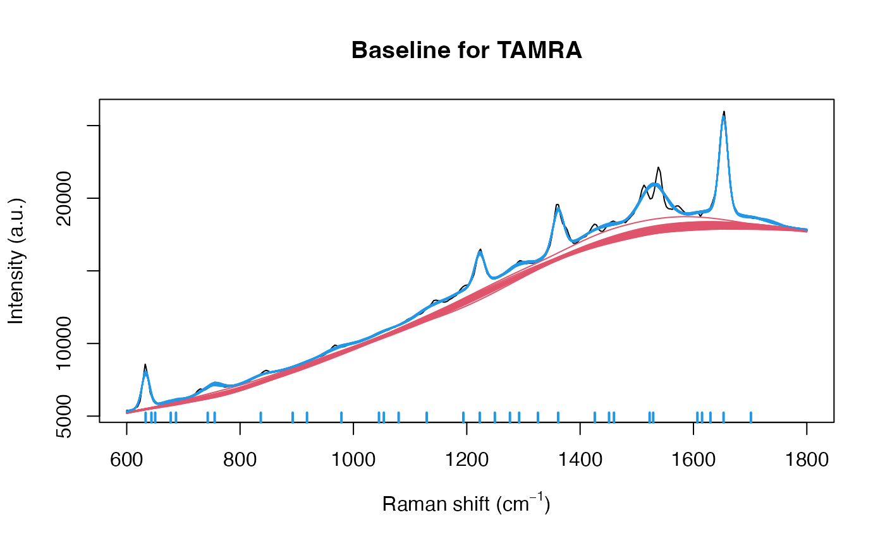
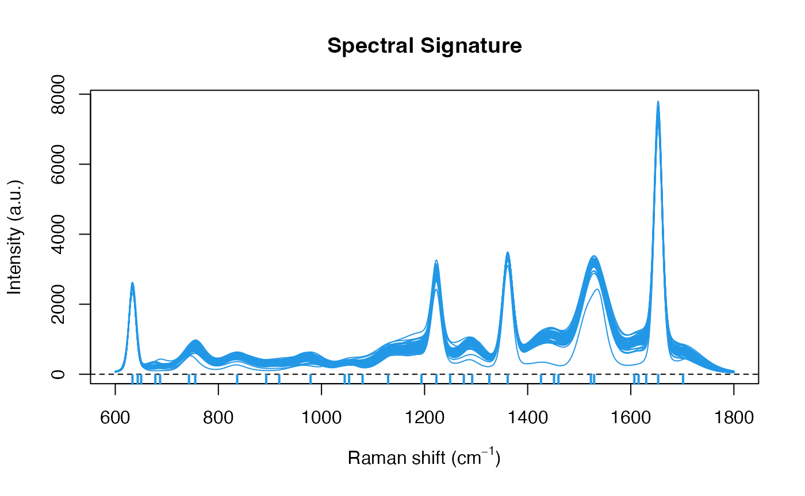

The R package serrsBayes uses a sequential Monte Carlo (SMC) algorithm (Del Moral et al. 2006) to separate an observed spectrum into 3 components: the peaks ; baseline ; and additive white noise : This is a type of functional data analysis (Ramsay et al. 2009), since the discretised spectrum is represented using latent (unobserved), continuous functions. The background fluorescence is estimated using a penalised B-spline (Wood 2017), while the peaks can be modelled as Gaussian, Lorentzian, or pseudo-Voigt functions.
The Voigt function is a convolution of a Gaussian and a Lorentzian: . It has an additional parameter that equals 0 for pure Gaussian and 1 for Lorentzian: where is the amplitude of peak ; is the peak location; and is the broadening. The horizontal axis of a Raman spectrum is measured in wavenumbers , with units of inverse centimetres (cm). The vertical axis is measured in arbitrary units (a.u.), since the intensity of the Raman signal depends on the properties of the spectrometer. This functional model is explained further in our paper, Moores et al. (2026).
Data
This example of surface-enhanced Raman spectroscopy (SERS) was originally published by Gracie et al. (2016):
library(serrsBayes)
data("lsTamra", package = "serrsBayes")
wavenumbers <- lsTamra$wavenumbers
spectra <- lsTamra$spectra
plot(wavenumbers, spectra[1,], type='l', col=4, main="Raman Spectrum of TAMRA+DNA",
xlab=expression(paste("Raman shift (cm"^{-1}, ")")), ylab="Intensity (a.u.)")
nWL <- length(wavenumbers)Priors
We will use the same priors that were described in the paper (Moores et al. 2026), including the TD-DFT peak locations from Watanabe et al. (2005):
peakLocations <- c(615, 631, 664, 673, 702, 705, 771, 819, 895, 923, 1014,
1047, 1049, 1084, 1125, 1175, 1192, 1273, 1291, 1307, 1351, 1388, 1390,
1419, 1458, 1505, 1530, 1577, 1601, 1615, 1652, 1716)
nPK <- length(peakLocations)
priors <- list(loc.mu=peakLocations, loc.sd=rep(25,nPK), scaG.mu=log(10) - (0.34^2)/2,
scaG.sd=0.34, scaL.mu=log(10) - (0.4^2)/2, scaL.sd=0.4, noise.nu=5, noise.sd=20,
bl.smooth=1, bl.knots=121, beta.exp=80)Computation
Now we run the SMC algorithm to fit the model:
data("result", package = "serrsBayes")
if(!exists("result")) {
t1 <- Sys.time()
result <- fitVoigtPeaksSMC(wavenumbers, spectra, priors, mcSteps=50, minPart = 7900, npart = 8000)
result$time <- Sys.time() - t1
save(result, file="Figure 2/result.rda")
}The default values for the number of particles, Markov chain steps, and learning rate can be somewhat conservative, depending on the application. With 34 peaks and 2401 wavenumbers, fitting the model can take a fair amount of time, even running in parallel with 8 CPU cores:
print(paste(format(result$time,digits=4)," for",length(result$ess),"SMC iterations."))
#> [1] "3.553 hours for 254 SMC iterations."The downside of choosing smaller values for these tuning parameters is that you run the risk of the SMC collapsing. The quality of the particle distribution deteriorates with each iteration, as measured by the effective sample size (ESS):
plot.ts(result$ess, ylab="ESS", main="Effective Sample Size",
xlab="SMC iteration", ylim=c(0,max(result$ess)))
abline(h=max(result$ess)/2, col=4, lty=2)
abline(h=0,lty=2)
plot.ts(result$accept, ylab="accept", main="M-H Acceptance Rate",
xlab="SMC iteration", ylim=c(0,max(result$accept)))
abline(h=0.234, col=4, lty=2)
abline(h=0,lty=2)
plot.ts(result$times/60, ylab="time (min)", main="Elapsed Time", xlab="SMC iteration")
plot.ts(result$kappa, ylab=expression(kappa), main="Likelihood Tempering",
xlab="SMC iteration")
abline(h=0,lty=2)
abline(h=1,lty=3,col=4)


If SMC collapses, the best solution is to increase the number of particles and run it again. Thus, choosing a conservative number to begin with is a sensible strategy. With 8000 particles and a maximum of 60 MCMC steps per SMC iteration, we can see from the above plots that the algorithm has converged to the target distribution. More detailed convergence diagnostics can be obtained from the genealogical history of the particles Lee and Whiteley (2015), but this is not yet implemented in the R package.
Posterior Inference
A subsample of particles can be used to plot the posterior distribution of the baseline and peaks:
samp.idx <- sample.int(length(result$weights), 50, prob=result$weights)
samp.mat <- resid.mat <- matrix(0,nrow=length(samp.idx), ncol=nWL)
samp.sigi <- samp.lambda <- numeric(length=nrow(samp.mat))
samp.loc <- colMeans(result$location)
spectra <- as.matrix(spectra)
plot(wavenumbers, spectra[1,], type='l', xlab=expression(paste("Raman shift (cm"^{-1}, ")")), ylab="Intensity (a.u.)")
for (pt in 1:length(samp.idx)) {
k <- samp.idx[pt]
samp.mat[pt,] <- mixedVoigt(result$location[k,], result$scale_G[k,],
result$scale_L[k,], result$beta[k,], wavenumbers)
samp.sigi[pt] <- result$sigma[k]
samp.lambda[pt] <- result$lambda[k]
Obsi <- spectra[1,] - samp.mat[pt,]
g0_Cal <- length(Obsi) * samp.lambda[pt] * result$priors$bl.precision
gi_Cal <- crossprod(result$priors$bl.basis) + g0_Cal
mi_Cal <- as.vector(solve(gi_Cal, crossprod(result$priors$bl.basis, Obsi)))
bl.est <- result$priors$bl.basis %*% mi_Cal # smoothed residuals = estimated basline
lines(wavenumbers, bl.est, col=2)
lines(wavenumbers, bl.est + samp.mat[pt,], col=4)
resid.mat[pt,] <- Obsi - bl.est[,1]
}
title(main="Baseline for TAMRA")
rug(samp.loc, col=4,lwd=2)
plot(range(wavenumbers), range(samp.mat), type='n', xlab=expression(paste("Raman shift (cm"^{-1}, ")")), ylab="Intensity (a.u.)")
abline(h=0,lty=2)
for (pt in 1:length(samp.idx)) {
lines(wavenumbers, samp.mat[pt,], col=4)
}
title(main="Spectral Signature")
rug(samp.loc,col=4,lwd=2)

Notice that the uncertainty in the baseline is greatest where the peaks are bunched close together, which is exactly what we would expect. This is also reflected in uncertainty of the spectral signature.
We can compute the Voigt parameters and the full width at half maximum (FWHM) for each peak:
result$voigt <- result$FWHM <- matrix(nrow=nrow(result$beta), ncol=ncol(result$beta))
for (k in 1:nrow(result$beta)) {
result$voigt[k,] <- getVoigtParam(result$scale_G[k,], result$scale_L[k,])
f_G <- result$scale_G[k,]
f_L <- result$scale_L[k,]
result$FWHM[k,] <- 0.5346*f_L + sqrt(0.2166*f_L^2 + f_G^2)
}Finally, display the lower and upper 95% highest posterior density (HPD) intervals for the parameters of each peak:
| Location (cm-1) | Amplitude | FWHM (cm-1) | Voigt |
|---|---|---|---|
| [ 633; 634] | [2333.5; 2549.2] | [ 8.8; 9.7] | [0.32; 0.40] |
| [ 637; 650] | [ 4.3; 28.2] | [24.6; 30.1] | [0.47; 0.69] |
| [ 643; 661] | [ 23.5; 80.4] | [28.8; 36.2] | [0.30; 0.38] |
| [ 665; 691] | [ 0.2; 1.0] | [21.2; 27.4] | [0.46; 0.57] |
| [ 677; 695] | [ 82.1; 273.8] | [25.0; 31.3] | [0.52; 0.71] |
| [ 736; 751] | [ 118.9; 243.6] | [33.7; 42.1] | [0.44; 0.59] |
| [ 752; 758] | [ 378.0; 747.3] | [30.6; 45.5] | [0.61; 0.77] |
| [ 833; 841] | [ 313.7; 513.2] | [34.4; 38.6] | [0.25; 0.34] |
| [ 881; 905] | [ 10.2; 21.1] | [20.4; 29.5] | [0.18; 0.27] |
| [ 902; 938] | [ 140.3; 338.2] | [43.1; 57.6] | [0.21; 0.33] |
| [ 968; 991] | [ 169.8; 475.4] | [25.5; 36.2] | [0.23; 0.34] |
| [1036; 1052] | [ 3.9; 18.6] | [19.2; 24.1] | [0.47; 0.70] |
| [1048; 1058] | [ 167.4; 310.7] | [34.7; 45.7] | [0.34; 0.49] |
| [1061; 1095] | [ 25.0; 62.3] | [32.1; 43.9] | [0.37; 0.61] |
| [1123; 1137] | [ 266.8; 547.0] | [23.8; 38.1] | [0.11; 0.18] |
| [1182; 1204] | [ 471.8; 899.2] | [54.4; 65.9] | [0.30; 0.42] |
| [1223; 1223] | [2184.5; 2367.0] | [11.8; 13.2] | [0.35; 0.44] |
| [1240; 1259] | [ 10.7; 76.6] | [18.0; 23.4] | [0.28; 0.42] |
| [1271; 1283] | [ 7.4; 45.8] | [28.5; 34.9] | [0.48; 0.61] |
| [1289; 1298] | [ 441.8; 834.0] | [27.8; 35.4] | [0.28; 0.43] |
| [1305; 1341] | [ 0.6; 1.8] | [26.3; 37.8] | [0.24; 0.40] |
| [1361; 1362] | [3022.3; 3191.4] | [14.4; 15.7] | [0.45; 0.50] |
| [1421; 1431] | [ 616.1; 931.1] | [39.0; 48.9] | [0.22; 0.30] |
| [1443; 1457] | [ 29.9; 112.8] | [24.6; 33.3] | [0.17; 0.25] |
| [1455; 1467] | [ 83.8; 528.4] | [28.2; 37.9] | [0.39; 0.51] |
| [1513; 1528] | [ 2.9; 118.6] | [22.8; 27.1] | [0.24; 0.36] |
| [1527; 1531] | [2795.0; 3249.2] | [33.2; 37.9] | [0.34; 0.49] |
| [1599; 1614] | [ 4.7; 26.7] | [26.2; 35.9] | [0.24; 0.38] |
| [1609; 1622] | [ 391.7; 835.6] | [31.2; 40.8] | [0.22; 0.31] |
| [1620; 1644] | [ 1.4; 3.5] | [47.7; 54.5] | [0.15; 0.20] |
| [1653; 1653] | [6735.3; 6930.2] | [10.8; 11.4] | [0.36; 0.41] |
| [1693; 1710] | [ 339.2; 684.2] | [40.8; 53.9] | [0.34; 0.45] |